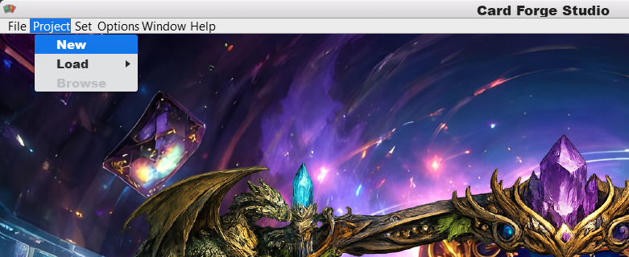
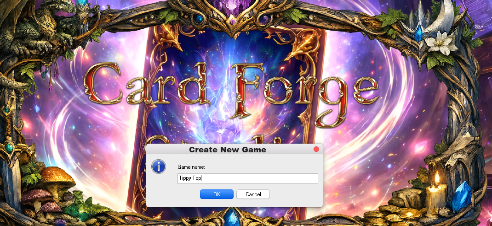
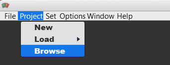
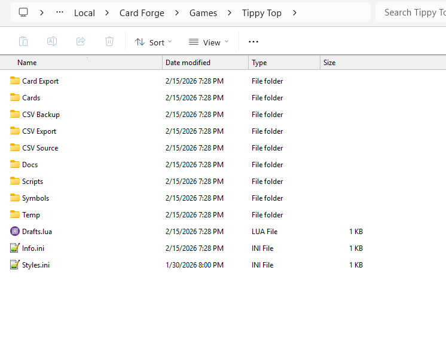

Creating a Project
Goal
Create your first Card Forge Studio project and open its folder on disk.
Steps
1) Open the “New Project” menu item
In Card Forge Studio, open the menu path shown below.

2) Fill out the New Project dialog
Choose your project name, then confirm to create the project.

3) Verify the project folder was created
After creation, your project will exist in a folder on disk.
All the basic files and folders will be created for you automatically. Open it in Windows Explorer to confirm.


Note: File copy/delete operations are handled through the filesystem, not inside Card Forge Studio.